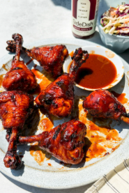

ChickenLollipop

Description
Chicken Lollipop is one of India’s most popular Indo-Chinese appetizers, made from chicken winglets where the meat is pushed down to one end of the bone to create a fun, lollipop-like handle. The marinated chicken is coated in a spiced batter of cornflour, ginger-garlic paste, soy sauce, and red chilli, then deep-fried until the outside turns ultra-crispy and golden-red while the inside stays tender and juicy.
Often served piping hot with a fiery Schezwan chutney or tossed directly in a glossy, sweet-and-spicy garlic sauce, this dish is a guaranteed crowd-pleaser at parties and dinners. The exposed bone makes it effortless to pick up and eat, delivering an irresistible crunch with every bite.
Ingredients
- 12 chicken lollipops (frenched chicken winglets)
- 1 tablespoon ginger-garlic paste
- 1.5 teaspoons Kashmiri red chilli powder (for colour and mild heat)
- 1 tablespoon soy sauce
- 1 teaspoon white vinegar
- 1/2 teaspoon black pepper powder
- 3 tablespoons cornflour
- 2 tablespoons all-purpose flour (maida)
- 1 large egg, lightly beaten
- Salt to taste
- Oil for deep frying
- Chopped spring onion greens and Schezwan chutney, for serving
Steps
- First marination: Pat the chicken lollipops dry with a kitchen towel. In a large bowl, toss them with ginger-garlic paste, red chilli powder, soy sauce, vinegar, black pepper, and salt. Cover and let it marinate for at least 30 minutes.
- Prepare the batter: Add the cornflour, all-purpose flour, and beaten egg directly into the marinated chicken. Mix well until every lollipop is coated in a thick, sticky batter (add a teaspoon of water only if the mixture feels too dry).
- Heat the oil: Pour enough oil into a deep kadhai or heavy-bottomed pan for deep frying and heat it over medium-high flame until hot.
- Fry the chicken: Carefully slide 4 to 5 lollipops into the hot oil at a time, holding them by the bone end for a second so they hold their shape. Fry on medium heat for 6 to 8 minutes until cooked through and crisp on the outside.
- Drain and serve: Remove the lollipops with a slotted spoon and drain excess oil on a paper towel. Garnish with chopped spring onion greens and serve piping hot with Schezwan chutney.
Home